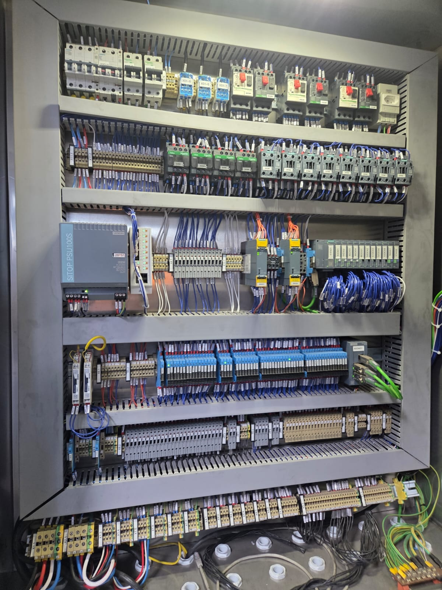

Retrofit e modernização de máquina
Substituição de comando eletromecânico ou de CLP e IHM fora de linha por arquitetura CLP + IHM atual, com levantamento em campo, reconstrução documentada da lógica e adequação normativa — sem depender do fabricante original.
O problema
- CLP ou IHM obsoletos, sem peça de reposição no mercado.
- Comando por relés e contatores, sem diagnóstico algum para a manutenção.
- Máquina antiga sem adequação à NR-12, travando auditoria ou liberação de seguro.
- A lógica de operação existe apenas na cabeça de quem opera o equipamento há anos.
O método
- Levantamento em campo e engenharia reversa da lógica existente, transformada em descritivo funcional aprovado antes de programar.
- Migração de plataforma de CLP e IHM com mapeamento de I/O em camadas e arquitetura de override.
- Base de alarmes classificados segundo ISA-18.2 e telas de intertravamento ISA-101.
- Adequação NR-12 e análise da distribuição 24 Vcc com estudo de seletividade.
- Documentação elétrica conforme IEC 61082, 81346 e 61355, coerente com a instalação real.
O que é entregue
- Máquina com CLP e IHM atuais, com diagnóstico na tela.
- Programa comentado, lista de I/O e descritivo funcional.
- Documentação elétrica atualizada.
- Treinamento de operação e manutenção.
Plataformas e normas02
CLP Siemens S7-1200 e S7-1500 (TIA Portal) e Delta série AS (DIADesigner); IHM Siemens KTP, Weintek e Delta DOP-3S; inversores Siemens Sinamics, WEG CFW, ABB ACS880 e Delta C2000. Normas: NR-12, ISA-18.2 / IEC 62682, ISA-101, IEC 61082 / 81346 / 61355.

Caso relacionado · Ficha 01
Máquina comandada por relés vira máquina com CLP, IHM e diagnóstico
Retrofit de comando eletromecânico para arquitetura CLP + IHM em máquina de blocos de concreto
Por onde começar
Comece por um Diagnóstico de Automação
Um dia na sua planta, relatório técnico em até cinco dias úteis, escopo e valor fechados antes do início. O relatório é seu, com ou sem contratação da execução.
O relatório entregaFolha 01 de 01
01Situação real do programa de CLP e do supervisório: backup, documentação e riscos.
02Levantamento de obsolescência de hardware e software.
03Lista priorizada das causas de parada.
04Plano de ação com estimativa de prazo e investimento por item.